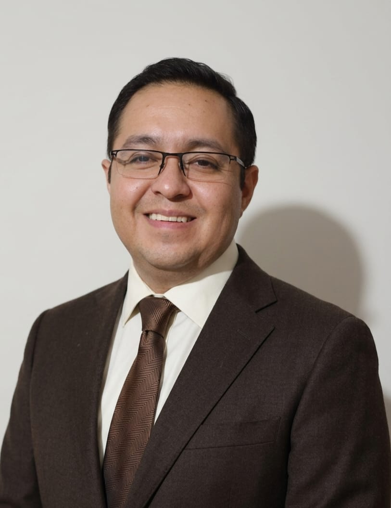
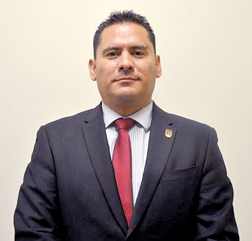
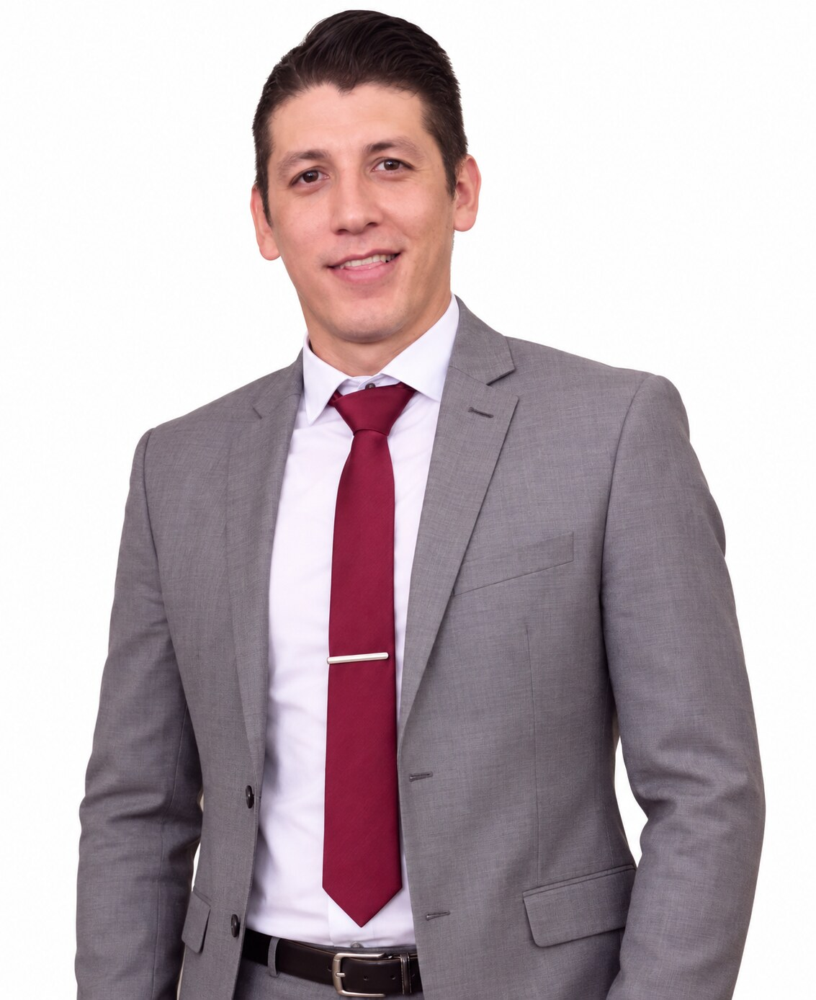

Rigor científico
Valorar que las afirmaciones centrales correspondan con la evidencia científica presentada y que la interpretación mantenga un alcance acorde con los estudios originales.
El Comité Evaluador de SEHBS reúne perfiles académicos complementarios para fortalecer la revisión científica y editorial de los contenidos divulgados en la plataforma.
Su función es aportar una revisión experta, multidisciplinaria y transparente que contribuya a que las noticias, análisis y síntesis de SEHBS comuniquen la evidencia con precisión y claridad.
Valorar que las afirmaciones centrales correspondan con la evidencia científica presentada y que la interpretación mantenga un alcance acorde con los estudios originales.
Revisar la coherencia entre diseño, población, variables, análisis y conclusiones cuando estos elementos sean relevantes para la noticia o síntesis editorial.
Favorecer una comunicación comprensible sin perder precisión técnica, distinguiendo resultados, limitaciones, aplicaciones y preguntas aún abiertas.
Asignar la revisión de cada contenido a perfiles con experiencia relacionada con el área temática y, cuando sea necesario, combinar perspectivas complementarias.
Biomecánica, fisiología del ejercicio, fuerza, potencia, entrenamiento y rendimiento físico.
Salud cardiometabólica, prescripción del ejercicio, actividad física, envejecimiento, nutrición y evaluación funcional.
Biología celular y molecular, metabolismo, bioquímica, cáncer, metástasis, biomarcadores y vesículas extracelulares.
Evaluación transversal de revisiones de literatura, síntesis de evidencia y análisis crítico de publicaciones científicas por integrantes con formación doctoral.
Un integrante puede participar en más de un área cuando su experiencia académica y científica lo justifique; por ello, los totales por área no representan personas únicas. En Revisión de Literatura pueden participar los integrantes con grado doctoral, de acuerdo con la pertinencia temática del contenido evaluado.
Dr. en Ciencias en Biomedicina
Facultad de Deportes Mexicali · Universidad Autónoma de Baja California
Doctorado en Ciencias en la Especialidad de Bioquímica
Facultad de Deportes Mexicali · Universidad Autónoma de Baja California
Dr. en Ciencias en Biomedicina
Unidad Ciencias de la Salud · Universidad Autónoma de Baja California
Responsable del Banco de Sangre en el IMSS

Dr. en Ciencias en Biología Celular
Facultad de Medicina y Nutrición · Universidad Autónoma de Baja California
Dra. en Nutrición Comunitaria
Facultad de Medicina y Nutrición · Universidad Autónoma de Baja California
Dr. en Ciencias de Ejercicio
Facultad de Deportes Ensenada · Universidad Autónoma de Baja California

Dr. en Ciencias de la Actividad Física y Deporte
Facultad de Deportes Mexicali · Universidad Autónoma de Baja California

Mtro. en Educación Física y Deporte Escolar
Facultad de Deportes Mexicali · Universidad Autónoma de Baja California
Mtra. en Educación Física y Deporte Escolar
Máster en Innovación e Investigación en Ciencias de la Actividad Física y Deporte
Facultad de Deportes Mexicali · Universidad Autónoma de Baja California